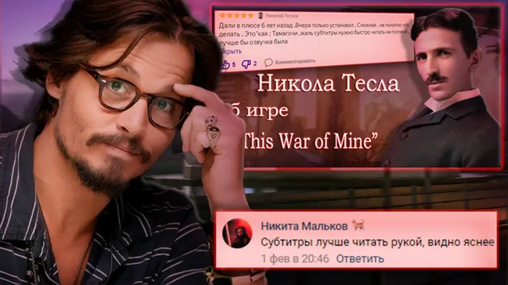
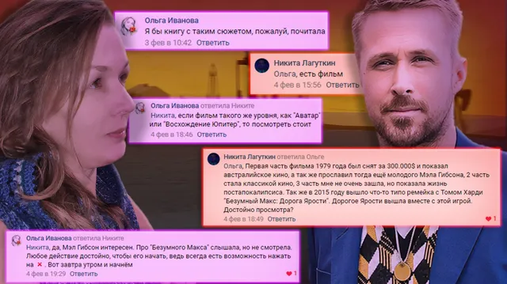

Ваши комментарии
ВКонтакте
🌃Что ж, вот и завершается первая неделя февраля, однако пришло время ваших комме…
7 февраля 2021 · оригинал во ВКонтакте ↗



🌃Что ж, вот и завершается первая неделя февраля, однако пришло время ваших комментариев, дорогие, приятного созерцания!
🏆Титул [https://vk.com/@criticssteam-sistema-titulov|Комментатора] сегодня получают:
🌟 [id156445910|Никита Мальков]
🌟 [id284440935|Никита Лагуткин]
🌟 [id467488979|Савва Герасимов]
⭐ [id356181250|Ольга Иванова]
⭐ [id119602395|Вова Адамов]
===========================
>Всем спасибо, пишите больше!
#ВашиКомментарии@criticssteam - №30
> Предыдущий выпуск - [https://vk.com/wall-196461758_3400|здесь]
🏆Титул [https://vk.com/@criticssteam-sistema-titulov|Комментатора] сегодня получают:
🌟 [id156445910|Никита Мальков]
🌟 [id284440935|Никита Лагуткин]
🌟 [id467488979|Савва Герасимов]
⭐ [id356181250|Ольга Иванова]
⭐ [id119602395|Вова Адамов]
===========================
>Всем спасибо, пишите больше!
#ВашиКомментарии@criticssteam - №30
> Предыдущий выпуск - [https://vk.com/wall-196461758_3400|здесь]